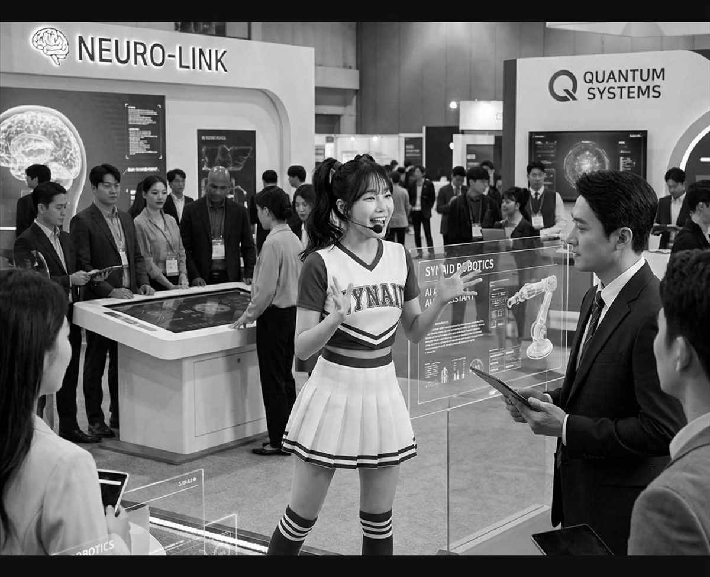

FOLD 390×844
01
散落的企業文件，

KNOWLEDGE INTELLIGENCE PLATFORM
散落的企業文件，
變成隨問隨答的
知識中樞
看 KIP 怎麼運作 →
集團各部共用同一套知識，答案都附得出原文出處。
01 首屏 Hero・提案 B「滿版現場照」
記憶點：不在首屏；記憶點（打字機答案）在第二屏的區塊 02。
折線：390×844 正好是首屏下緣。
動態：hero-rise 保留・輪播只靠手勢不自動播・視差關閉・抽屜全螢幕覆蓋。
表面字數：首屏 44 字（圓鈕、捲動提示與輪播標籤全部移除）；全頁 442 字。
重排：導覽＝漢堡（左）／字標（中）／洽談導入圖示鈕（右，40px 觸控區）；大標 80→34px、3 行；內容貼底；上下張圓鈕與捲動提示全部移除，只留 3 顆圓點；支持句滿欄縮到 21 字；照片焦點 66%。
折線：390×844 正好是首屏下緣。
動態：hero-rise 保留・輪播只靠手勢不自動播・視差關閉・抽屜全螢幕覆蓋。
表面字數：首屏 44 字（圓鈕、捲動提示與輪播標籤全部移除）；全頁 442 字。
重排：導覽＝漢堡（左）／字標（中）／洽談導入圖示鈕（右，40px 觸控區）；大標 80→34px、3 行；內容貼底；上下張圓鈕與捲動提示全部移除，只留 3 顆圓點；支持句滿欄縮到 21 字；照片焦點 66%。
- 媒介
- 圖（整屏一張照片；導覽列透明疊在其上）
- 來源
- 大標＝S1；支持句＝S1＋S2-6；照片＝暫用現行 synaiq.com 商用場景圖，自有展場現場照尚未取得
- 收合
- 導覽主連結與語言切換全部收進全螢幕抽屜
- 390
- 大標與支持句一律滿欄；CTA 高 48px 符合 44px 觸控下限
素材風險：主視覺押在一張還不存在的高解析現場照上。
02
p. 12
.pdf
§ 3.2
v2.1
.docx
掃描件
§ 5
委製線稿（待補）
俯身翻找卷宗
大幅裁切
俯身翻找卷宗
大幅裁切
KIP 現場示範
訪客提問
這份 2023 年的合約，
第 12 頁寫了什麼？
第 12 頁寫了什麼？
第 12 頁是保固條款：驗收後兩年內免費更換。
來源：示範採購合約 2023 v2 第 12 頁
02 打字機答案屏（墨底・本案的記憶點）
這一塊就是提案 A 的首屏被移下來的版本：內容、素材、動態全部相同，只差它不在折線之上，而且答案級距由 34px 升為敘事大標 40px。
- 媒介
- 字（打字機答案為主）＋一張委製線稿＋碎片底紋
- 來源
- 示範問答文案待定（見 hero-copy-candidates.md）；出處署名為示範用假文件名；線稿＝委製待補
- 動態
- 打字機進入視窗才開始，每字 100ms、21 字約 2.1 秒，打完停住；行動版仍保留（不佔捲動、不擋內容）
- 收合
- 無
- 390
- 提問拆兩行；答案敘事大標 40px、4 行滿欄；線稿縮到 200×210 貼右下並大幅裁切；碎片 14 → 7 條。本頁敘事大標第 1 次
行動版代價最大：這一屏在 390 佔 700px，訪客要先捲完 844 的照片首屏才會遇到記憶點。
03
知識中樞怎麼
一張圖看懂
知識中樞怎麼
接進公司
Web、API 與行動裝置接入；大模型可雲端、也可裝在自己機房。

03 架構一張圖（本斷點不釘住）
- 媒介
- 圖
- 來源
- S1；需重繪為灰階向量圖（待補）
- 動態
- pin-wipe 在 < 900 一律關閉；四層說明改 tap 展開
- 收合
- 四層說明預設收合
- 390
- 大標拆兩行；架構圖維持原比例、容器內橫向捲動（min-width 900）；熱點只留最上兩層
若改為縱向四層堆疊圖，此段可省掉橫向捲動（待業主裁定）。
04
每一句答案，
產品畫面
每一句答案，
都指得到原文

①引用來源可展開，看得到是哪一份、哪一頁。
②查不到就說查不到，不以推測內容作答。
04 產品證據（IKS 畫面）
- 媒介
- 圖
- 來源
- 截圖＝S4／S5；①＝S2-6；②＝S2-1。業主 2026-09-08 裁定：截圖可直接對外使用
- 動態
- scroll-reveal；點截圖開全螢幕覆蓋層（可雙指縮放）
- 收合
- 截圖細節收在覆蓋層
- 390
- 左右 → 上下堆疊；截圖焦點 52% top；「點擊放大」標籤常駐
05
八項核心優勢
準確回答，低 AI 幻覺
＋有依據才回答
快速找到需要的資訊
＋上萬份文件秒級定位
自然語言提問
＋不必先想關鍵字
知識內容隨時更新
＋制度一改版，答案跟著更新
已收合 4 列：多知識來源整合／資訊來源驗證／多輪對話／多媒體知識＋
展開全部 8 項 ＋
05 八項優勢
- 媒介
- 表
- 來源
- S2 全 8 項（業主 2026-09-08 裁定採 8 項）
- 動態
- 只有 row-expand 260ms 與 hover，不加進場動畫
- 收合
- 預設收合：前 4 張卡可見、後 4 列摺起
- 390
- 表格 → 堆疊卡片；整張卡為 44px 以上的觸控區
表格不做 scroll-reveal：採購者要對它按 Ctrl+F、截圖轉貼與列印。
06
同一套知識，
WALLY 系列
同一套知識，
走到現場
櫃檯、展場、大廳：知識庫換一個介面出現。

1／5
06 Wally：KIP 的現場化身
- 媒介
- 圖
- 來源
wally.md。業主 2026-09-08 裁定：Wally 是 KIP 的現場化身- 動態
- scroll-snap 一次一格；不自動輪播
- 390
- 五連拍 → 單張輪播（290 寬）；進度改 5 段條
07
市長 AI 分身，
應用實績
市長 AI 分身，
進軍東京食品展

14 家
業者展區
4 語
日英韓中導覽
看全部實績 →
07 實績（單一案例）
- 媒介
- 圖
- 來源
- 現行 synaiq.com
#success；具名授權待確認 - 動態
- scroll-reveal；數字靜態顯示、不做滾動
- 390
- 標題在圖上方；照片改 7:6、焦點 58%／42%；數字 2 欄；CTA 另起一列
08
上萬份
文件秒級定位
看 KIP 平台 →
08 數字帶（收成一個數字）
- 媒介
- 表的最短形式
- 來源
- S2-2
- 動態
- 沒有數字滾動
- 390
- 數字 64→44px；膠囊在數字下方
順序與內容變更：原 2×2 四個數字由開場移到實績之後，收成 1 個；其餘三個下放 /cases。
09
整套可裝在
公司自己機房。
文件不進外部雲，問答內容不會被拿去訓練外部模型。
十項資安機制 →
09 資料主權（敘事大標單句）
- 媒介
- 字（全頁唯一的整句段落）
- 來源
- S2 SOVEREIGNTY
- 動態
- scroll-reveal 整段淡入，不逐字
- 390
- 敘事大標 40px，2 行滿欄；依據句 15px；膠囊置句下。本頁敘事大標第 2 次，已達每頁上限
要注意：390 上敘事大標下限 40px 與區塊 02 的答案同級距，兩處大字在行動版看起來一樣重；提案 A 沒有這個問題（A 的答案在首屏用 34px 的首屏大標）。
10
先講一個場景，
先講一個場景，
我們回一個做法。
① 資料來源
② 使用對象
③ 預期成果
洽談導入 →
10 行動呼籲
- 媒介
- 字＋三標籤
- 390
- 標籤橫排 → 直排滿欄，每列 40px 觸控區
11
SynaiQ
鑫揚智能科技股份有限公司
台中市西屯區文心路二段 201 號 11 樓之 8
台中市西屯區文心路二段 201 號 11 樓之 8
產品＋
公司＋
聯絡－
+886 4 2393 1368
service@synaiq.com
Instagram ↗
service@synaiq.com
Instagram ↗
ZH ／ EN－
11 頁尾
- 媒介
- 表
- 收合
- 預設收合：產品／公司兩組摺起，聯絡組預設展開
- 390
- 4 欄 → 摺疊清單；每列 44px 觸控區
提案 B 全頁 11 塊，順序與 1440／768 一致。釘住場景在本斷點0 個。
行動版全頁比提案 A 多 700px（多一屏）。
行動版全頁比提案 A 多 700px（多一屏）。